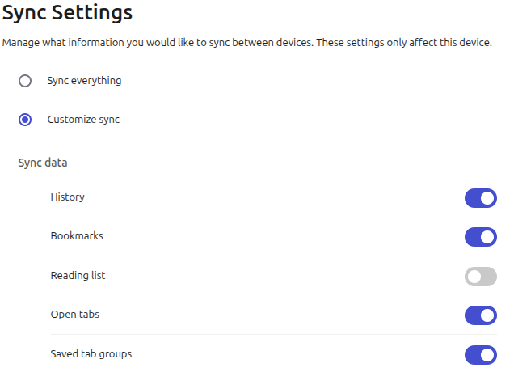
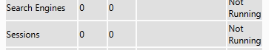
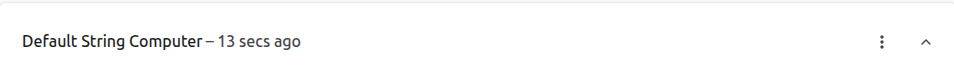

Brave leidis teise arvuti vahelehed, kuid parandav samm jäi kinnitamata
Kasutaja soovis teiste seadmete avatud vahelehti, mitte sirvimisajalugu. Esialgu näitas Brave No tabs from other devices. Kasutaja kinnitas, et lõi uue sünkroonimise ja valis vahelehed, kuid neid ei ilmunud.
- Kell 18.29 pildil oli Linuxi Brave'i
brave://settings/braveSync/setupvaates Customize sync ning Open tabs sisse lülitatud. Seadmete loendis olid kaks arvutit. - Kell 18.32 näitas Windowsi Brave'i
brave://sync-internalsvaates Sessions olekut Not Running ja null kirjet. Üldine ühendus oli samal pildil aktiivne; toimiv ühendus ei tõestanud vahelehtede sünkroonimist. - Kell 18.34 oli Linuxi aadressil
brave://history/syncedTabs, valikus Tabs from other devices, teise arvuti vahelehtede loend juba nähtav. Pildil oli seadme pealkiri Default String Computer – 13 secs ago.



Tulemus: vahelehtede loendi ilmumine on kasutaja saadetud pildiga kinnitatud; täpsed lahendussammud pole allikast kinnitatud. Assistent soovitas Windowsis Open tabs välja ja uuesti sisse lülitada, kuid kasutaja selle tegevuse tegemist eraldi ei kinnitanud. Seetõttu ei saa lülitamisele parandust omistada.
Edasine soovitus, katsetamata: avada loendist üks vaheleht või seadme ⋮ → Open all. Kõigi vahelehtede tegelikku avamist ega automaatset taastamist kasutaja aknasse ei kinnitatud. Tõendatud on üks loendi ilmumise katse, mitte püsiv parandus.